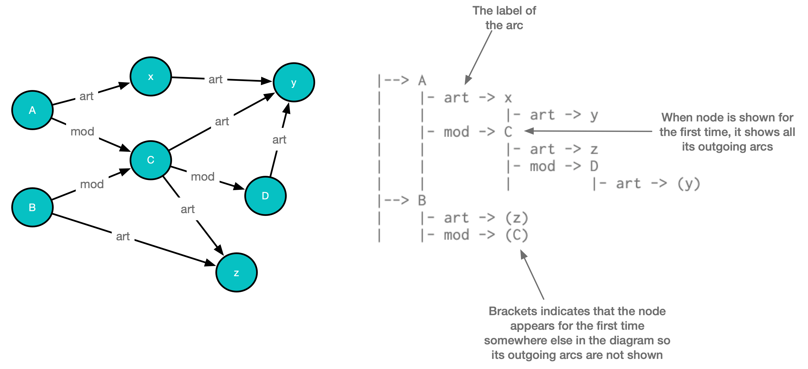

Class ImGraph<KEY,DATA,LABEL>
- All Implemented Interfaces:
HasTextBox,Values,Serializable
A directed labelled graph. It can have cycles.
Not all the nodes need to be connected.
Nodes are identified by keys of type KEY
Each node has an object of type DATA associated with it
Each node can be connected to 1 or more other nodes via labelled arcs
If node a is connected to node b via an arc labeled c then we store the arc c in arcsOut and in arcsIn
Graphs are immutable - each time you add a node or an arc between two nodes, a new graph is created.
The show method returns a text representation of the graph in the form of an ascii art diagram.
This is an example of a graph with arcs labelled art or mod and its ascii-art diagram

- See Also:
-
Nested Class Summary
Nested Classes -
Field Summary
Fields -
Method Summary
Modifier and TypeMethodDescriptionaddArcAfter(LABEL label, KEY start, KEY end, KEY after) Add an arc with labellabelfromstarttoend- adding it after the arc fromstarttoafterwith labellabeladdArcAsLast(LABEL label, KEY start, KEY end) addNodeIfMissing(KEY key, DATA value) addNodeToParent(LABEL arcLabel, KEY parentKey, KEY childKey, DATA childValue) booleancontainsNodeWithKey(KEY key) static <KEY,DATA, LABEL>
ImGraph<KEY,DATA, LABEL> empty()getClosure(ImGraph.Dir dir, ImSet<LABEL> labels, KEY key) Get the closure ofkeynot includingkeyin the directiondirchasing the arcs with labels in the setlabelsgetClosure(ImGraph.Dir dir, KEY key) Get the closure ofkey(not includingkey) in the directiondirchasing the arcs with any labelgetClosure(ImGraph.Dir dir, LABEL label, KEY key) Get the closure ofkeynot includingkeyin the directiondirchasing the arcs with labellabelgetConnected(ImGraph.Dir dir, ImSet<LABEL> labels, KEY key) Get the keys that are connected tokeyby arcs in the directiondirthat have a label contained inlabelsgetConnected(ImGraph.Dir dir, KEY key) Get the keys that are connected tokeyby arcs in the directiondir- whatever labels they havegetConnected(ImGraph.Dir dir, LABEL label, KEY key) Get the keys that are connected tokeyby arcs in the directiondirthat have the labellabelgetInclusiveClosure(ImGraph.Dir dir, LABEL label, ImList<KEY> keys) Get the closure ofkeysincluding each element ofkeysin the directiondirchasing the arcs with labellabelgetInOrderClosure(ImGraph.Dir dir, ImSet<LABEL> labels, ImList<KEY> keys) Get the inclusive in-order (AKA depth-last) closure ofkeyin the directiondirchasing the arcs with any labelgetInOrderClosureOnSingleKey(ImGraph.Dir dir, ImSet<LABEL> labels, KEY key) getNames()getPairs(ImGraph.Dir dir, KEY key) Get the arcs in the directiondirfromkeyin the form of pairs containing the arc label and the keygetPaths(ImGraph.Dir dir, ImSet<LABEL> labels, KEY key) Get the paths of the keys that are connected tokeyby arcs in the directiondirthat have a label contained inlabelsThe first entry in each path is keygetValuesFromKeys(ImList<KEY> keys) booleanhasCycle()keys()leaves()removeNode(KEY key) roots()show()shrinkToInclusiveClosureOf(ImSet<LABEL> labels, ImList<KEY> ks) values()Methods inherited from class dev.javafp.val.ImValuesImpl
equals, getTextBox, hashCode, toStringMethods inherited from interface dev.javafp.val.Values
defaultEquals
-
Field Details
-
In
-
Out
-
-
Method Details
-
shrinkToInclusiveClosureOf
-
getValues
-
getNames
-
addNode
-
addNodeToParent
-
addNodeIfMissing
-
empty
-
containsNodeWithKey
-
addArc
-
addArcAsLast
-
addArcAfter
Add an arc with label
labelfromstarttoend- adding it after the arc fromstarttoafterwith labellabel -
removeArc
-
removeNode
-
getValue
-
roots
-
leaves
-
hasCycle
public boolean hasCycle() -
show
-
map
-
getGraphVizGraph
-
keys
-
values
-
getPairs
Get the arcs in the direction
dirfromkeyin the form of pairs containing the arc label and the key -
getClosure
Get the closure of
keynot includingkeyin the directiondirchasing the arcs with labellabel -
getInclusiveClosure
Get the closure of
keysincluding each element ofkeysin the directiondirchasing the arcs with labellabel -
getConnected
Get the keys that are connected to
keyby arcs in the directiondirthat have the labellabel -
getClosure
Get the closure of
keynot includingkeyin the directiondirchasing the arcs with labels in the setlabels -
getConnected
Get the keys that are connected to
keyby arcs in the directiondirthat have a label contained inlabels -
getPaths
Get the paths of the keys that are connected to
keyby arcs in the directiondirthat have a label contained inlabelsThe first entry in each path is key -
getClosure
Get the closure of
key(not includingkey) in the directiondirchasing the arcs with any label -
getConnected
Get the keys that are connected to
keyby arcs in the directiondir- whatever labels they have -
getInOrderClosure
Get the inclusive in-order (AKA depth-last) closure of
keyin the directiondirchasing the arcs with any labellet l = g.getInOrderClosure(d, k)
in order means this:
for all a, b in list, rank a < rank b => there is no path from b to a in direction `dir`This function is
O(n^2)I think so ...er... beware -
getInOrderClosureOnSingleKey
-
getValuesFromKeys
-